Best Time清晨 6:00–9:00 最活跃,傍晚 16:00–18:00 次之。
Core Zone南园湿地(地铁 8 号线森林公园南门站)是核心区。
Gear8×42 望远镜;穿暗色衣物;不用闪光灯;距离 5 米以上。
Listen First很多鸟先闻其声。安静下来比走得快更重要。
奥海主湖、北侧开阔水面。看游禽、潜水鸟、岸边涉禽。
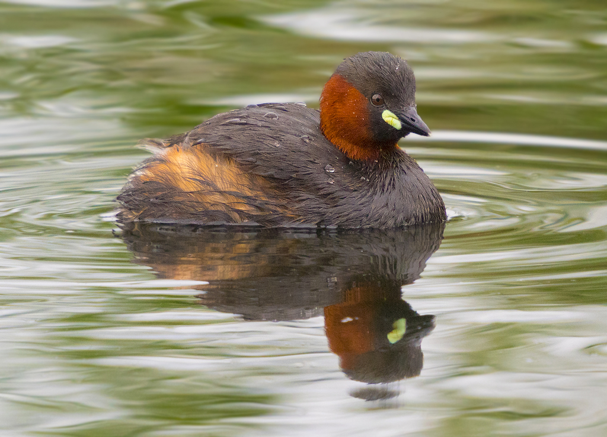
小䴙䴘Little Grebe常见
看点奥森繁殖鸟。鸭子模样但更小更圆,繁殖羽脸颊和颈侧栗红色。
行为浮水/潜水交替找鱼。叫声尖锐颤音"咯咯咯咯"。
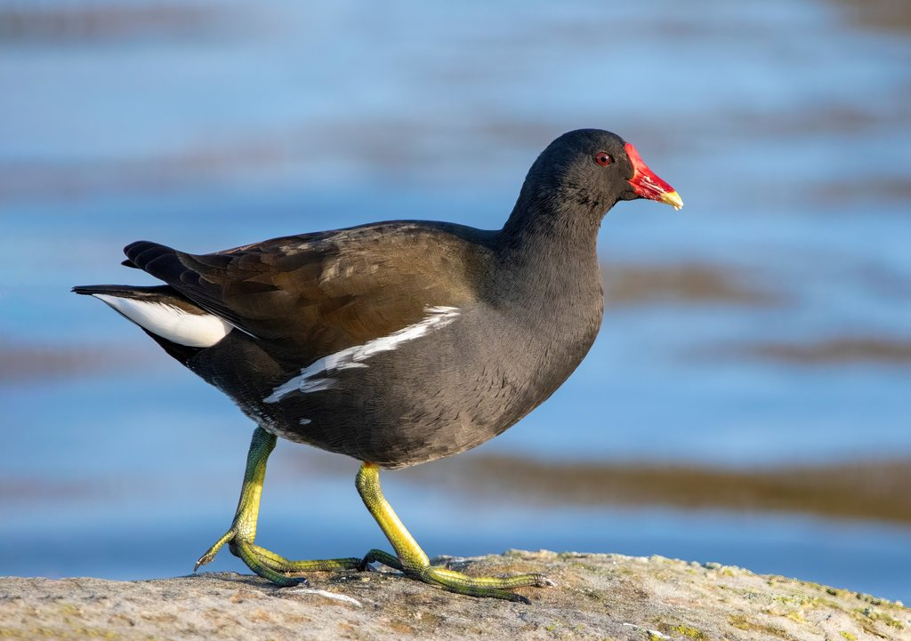
黑水鸡Common Moorhen常见
看点通体偏黑,红色额甲 + 黄尖红喙,体侧一道白纹。
行为不太怕人,贴岸边芦苇游。游水时尾巴一翘一翘,露尾下两白斑。
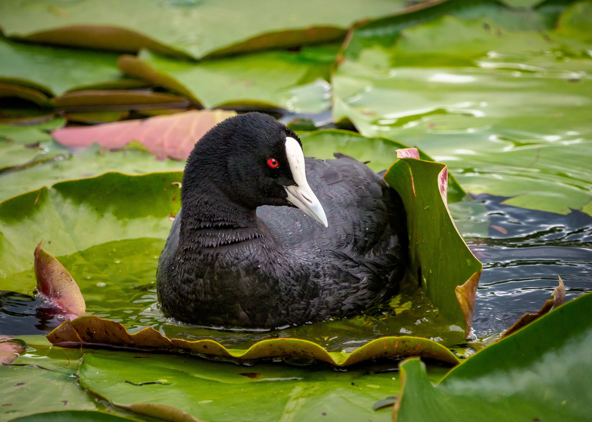
白骨顶Eurasian Coot常见
看点和黑水鸡像但更胖一圈,整张脸纯白(额甲+喙都是白的)。
行为擅长潜水(黑水鸡基本不潜)。常成群在湖中央。
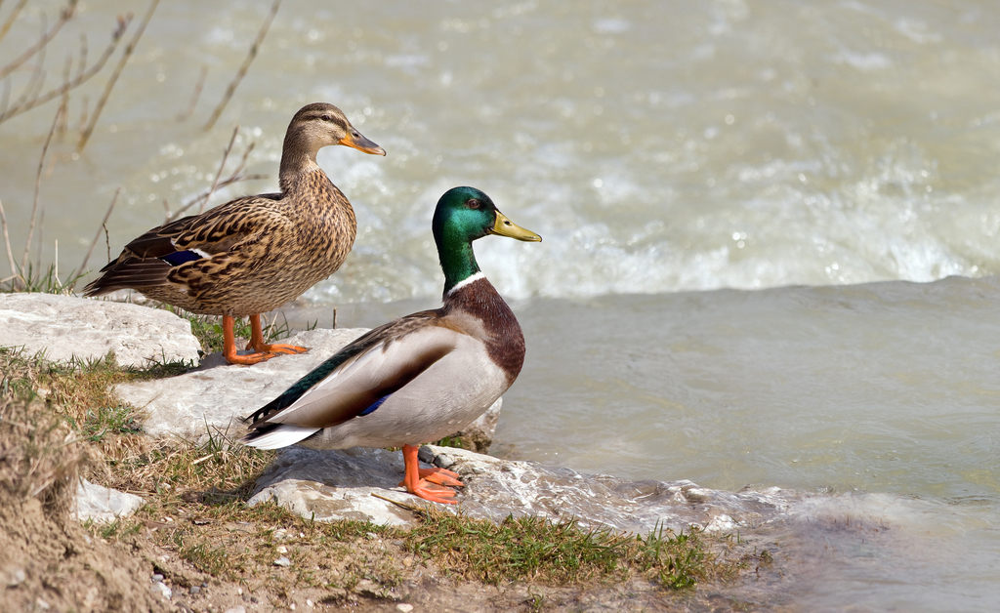
绿头鸭Mallard常见
看点雄鸟头颈墨绿带金属光泽,颈部白圈,胸栗色。雌鸟全身斑驳棕色。
注意五月已是繁殖期,可能见母鸭带一串小鸭子。
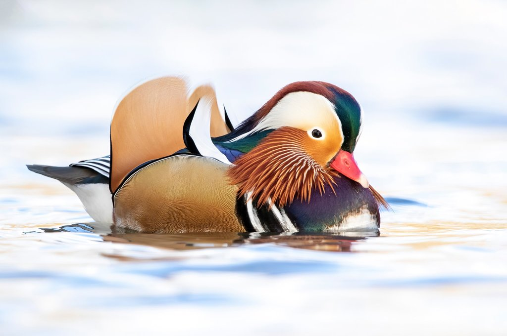
鸳鸯Mandarin Duck偶见
看点雄鸟橙色"船帆状"翅羽立在背上,脸侧白纹+红喙。雌鸟灰褐配白色眼圈。
何处找开阔水面边缘有树荫的位置。通常成对。
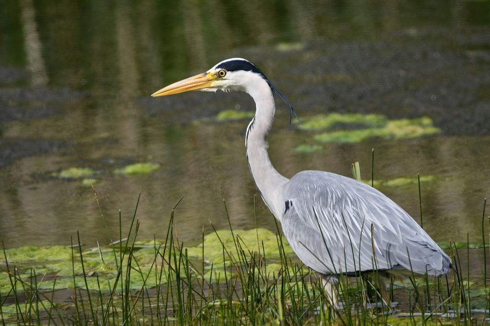
苍鹭Grey Heron常见
看点大型涉禽,灰蓝色长脖子,头顶一道黑色饰羽。
行为浅滩一动不动伫立等鱼。飞行时颈缩成 S 形。可能见到夜鹭(矮胖、头黑背蓝、红眼)。
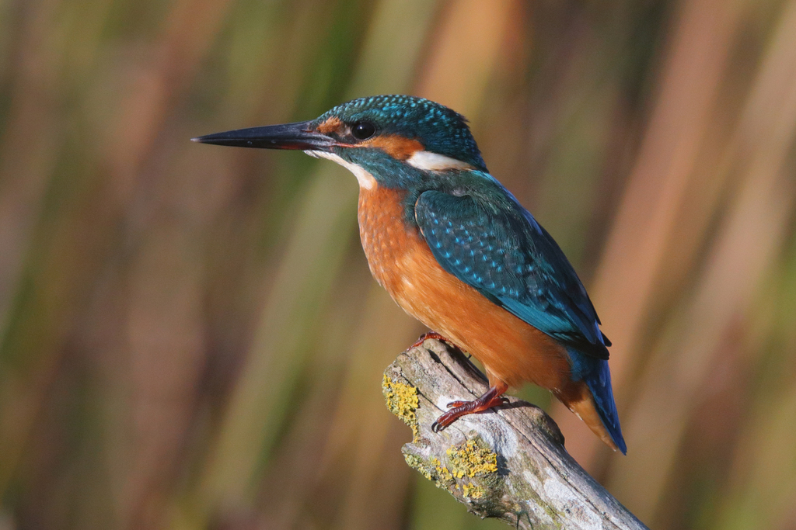
普通翠鸟Common Kingfisher★ 必看
看点背部电光蓝、胸腹橙红,麻雀大小。停在水边低枝上如宝石一样发光。
行为俯冲入水捕鱼,一闪即逝。沿水岸飞行时发出尖细"叽——"哨音。
奥森南园湿地的核心。五月芦苇正盛,多听少看,耐心蹲点。
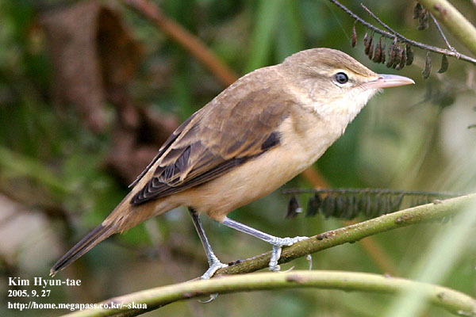
东方大苇莺Oriental Reed Warbler★ 必看
看点五月奥森芦苇区的"声音主角"。土褐色小鸟,叫声"嘎-嘎-叽-叽-嘎-嘎"粗哑分明。
行为繁殖期雄鸟站到芦苇尖端高歌,循声找苇尖即可。
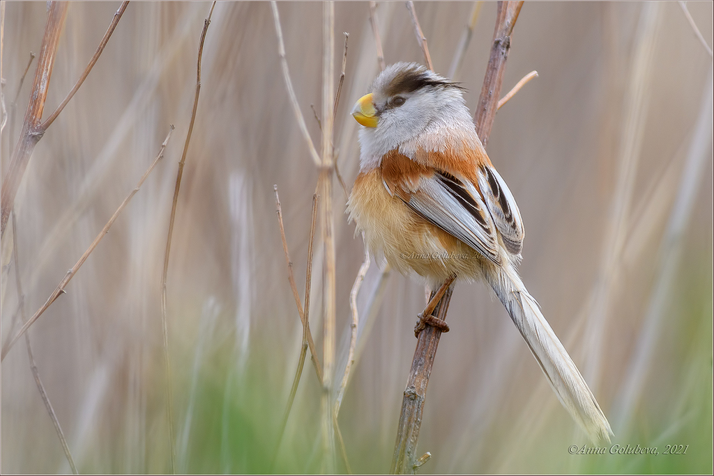
震旦鸦雀Reed Parrotbill★ 鸟中熊猫
看点全球濒危。黄色短粗喙,头顶灰、眼上一道黑眉。奥森南园湿地是北京城内最稳定的观察点之一。
行为小群活动,攀附在芦苇秆上啄虫。
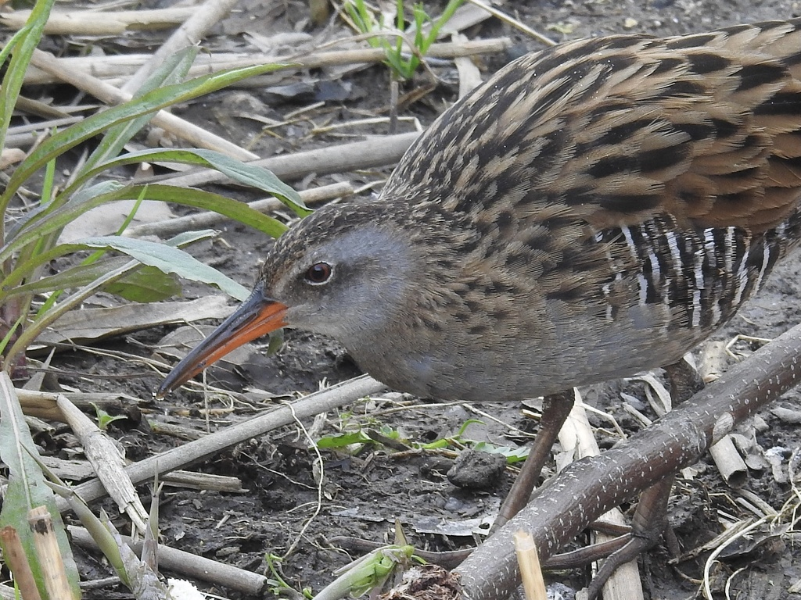
普通秧鸡Brown-cheeked Rail隐蔽难见
看点长红喙、灰脸、体侧黑白横纹。极度怕人,芦苇丛底层潜行。
小窍门在芦苇与水面交界处耐心守候 10–15 分钟。
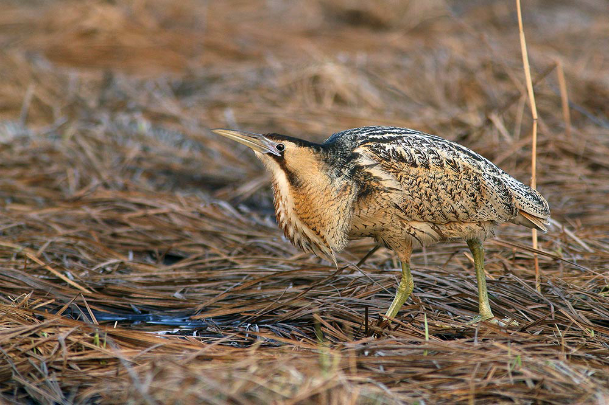
大麻鳽Eurasian Bittern伪装大师
看点整个就是一根会动的芦苇。受惊时"竖脖站立",嘴指向天空。
能看到算运气湿地深处传来低沉的"嗡——"远距离闷响,大概率就是它。
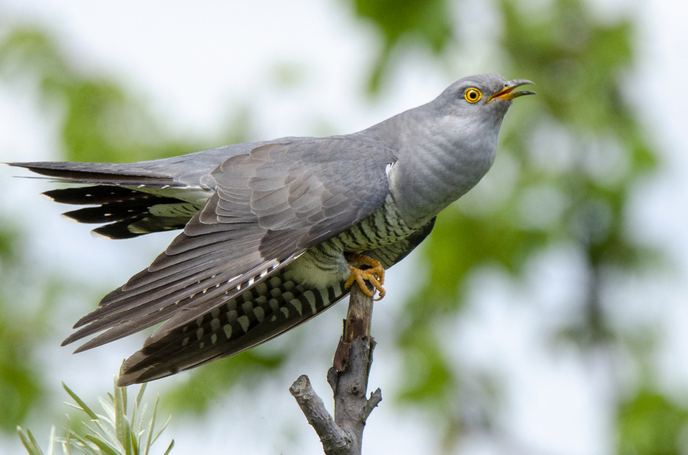
大杜鹃（布谷）Common Cuckoo声音常见
看点体型像鸽子,灰蓝背、白腹黑横纹,远看像小型猛禽。
行为大概率"只闻其声不见其影"——"布——谷、布——谷"两音节。会把蛋下到大苇莺巢里。
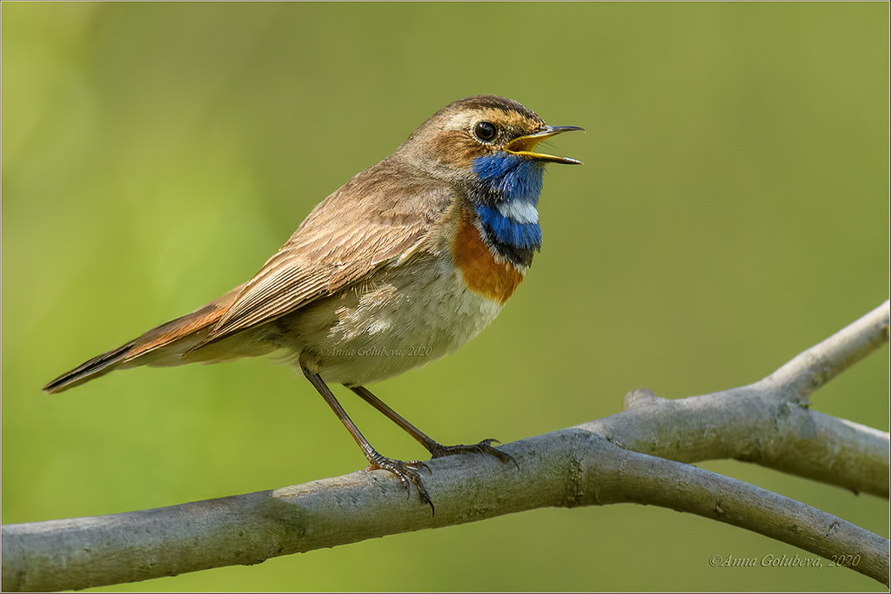
蓝喉歌鸲Bluethroat★ 颜值
看点雄鸟喉部宝蓝色中央嵌一块橙红斑,如胸前别了一枚勋章。
何处找芦苇与灌丛交界处地面、低枝。五月仍有过境个体。
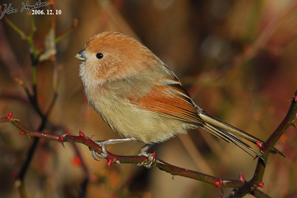
棕头鸦雀Vinous-throated Parrotbill常见
看点棕红色头顶,短粗黄灰喙,体型圆小。和震旦鸦雀同科但更常见。
行为嘈杂小群在芦苇和灌木间穿梭,叫声"嗒嗒嗒"细碎。
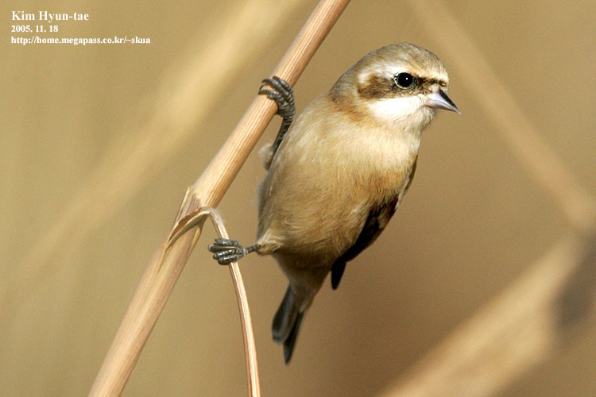
中华攀雀Chinese Penduline Tit偶见
看点白脸上一道宽黑眼罩,栗红色背,体型比山雀还小。
行为攀附在芦苇或柳枝上,能倒挂觅食。叫声细弱"唧唧"。
乔木林、灌丛、林缘步道两侧。多抬头看树冠中层。
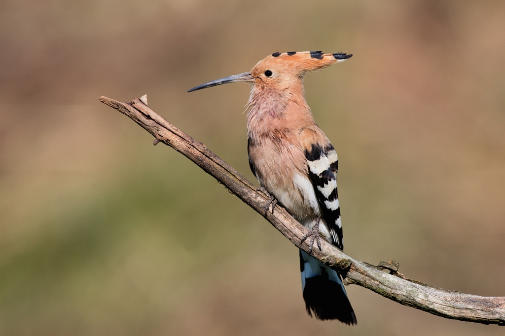
戴胜Eurasian Hoopoe★ 颜值担当
看点辨识零难度。橙粉色身体,头顶扇形冠羽,黑白翅斑,长长的弯喙。
行为爱在草地上一蹦一蹦地走。叫声"hu-hu-hu"三连音。
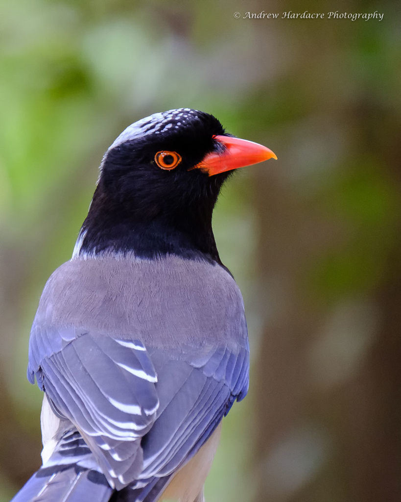
红嘴蓝鹊Red-billed Blue Magpie★ 必看
看点奥森"明星颜值担当"。亮蓝色,红喙红脚,极长的蓝白渐变尾羽。
行为小群活动,叫声嘈杂尖锐。飞行时尾巴如飘带。
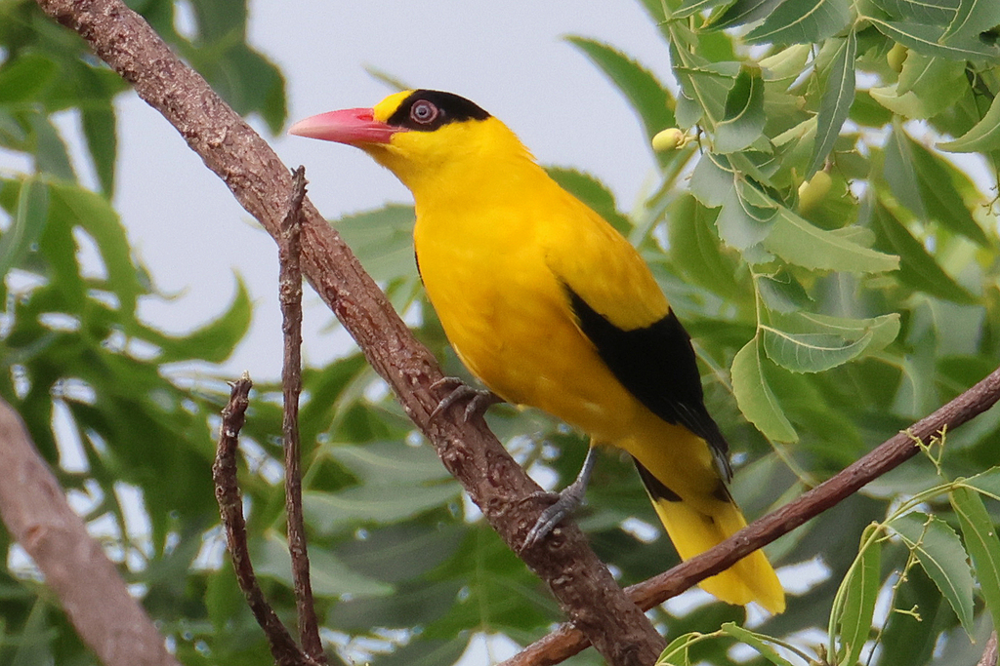
黑枕黄鹂Black-naped Oriole★ 必看
看点全身金黄,过眼至后枕一道粗黑带,红喙,翅尖黑色。雌鸟偏黄绿色。
行为鸣声婉转悦耳如液体流淌。通常在高树冠层活动,不易见到身影。
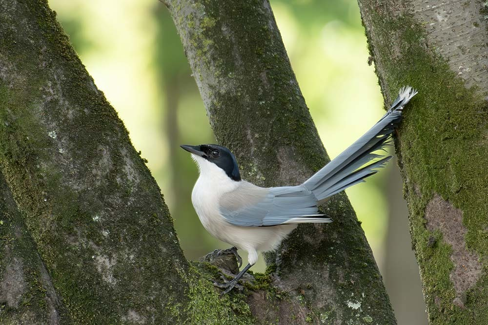
灰喜鹊Azure-winged Magpie极常见
看点黑头、灰背、淡蓝色长尾和翅膀。比普通喜鹊小一号,配色更柔。
行为永远嘈杂集群移动。叫声"jia-jia-jia"。
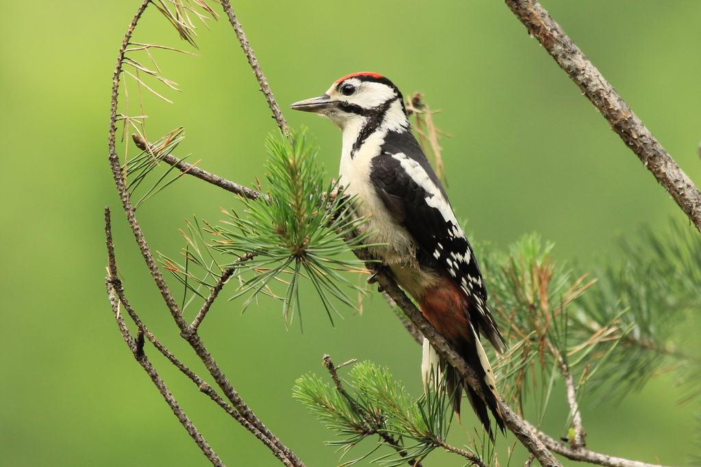
大斑啄木鸟Great Spotted Woodpecker常见
看点黑白对比强烈,肩部两块大白斑,尾下覆羽鲜红色。雄鸟后脑红斑。
行为"咚咚咚咚"快速敲击声。沿树干向上螺旋式攀爬。
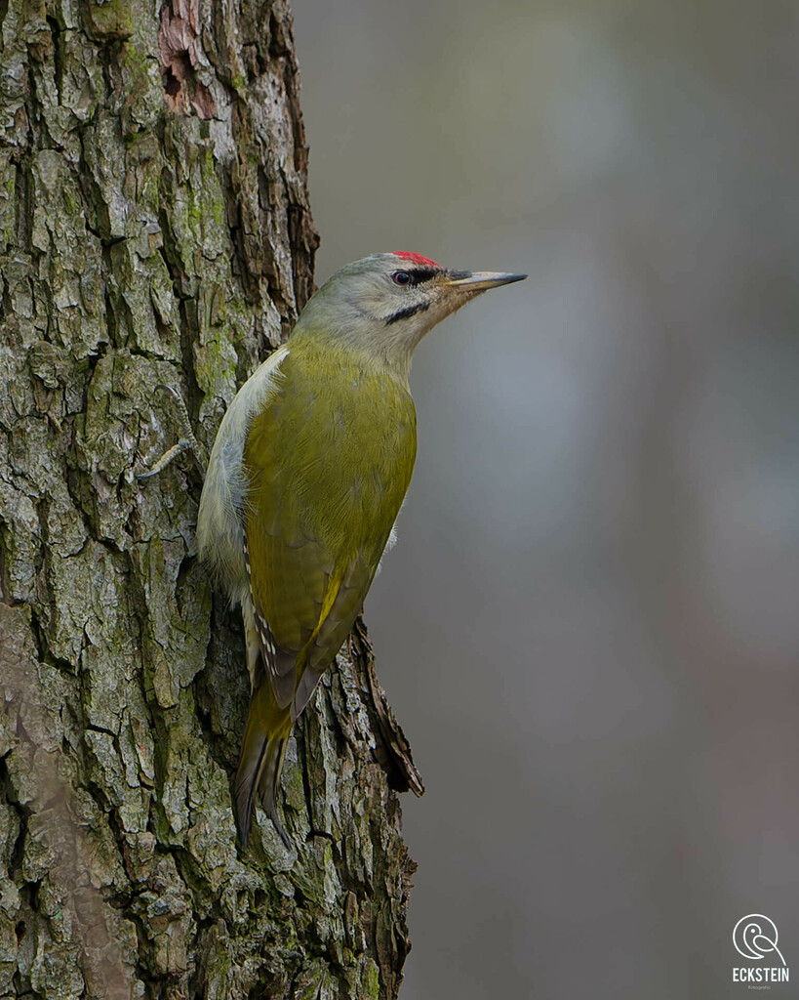
灰头绿啄木鸟Grey-headed Woodpecker常见
看点通体橄榄绿,灰色脸和颈。雄鸟头顶一小块红斑。
行为叫声"keu-keu-keu-keu"渐慢。常在地面草丛里啄蚂蚁。

乌鸫Chinese Blackbird极常见
看点通体乌黑,橙黄色喙和眼圈极其显眼。比乌鸦小很多。
行为"鸟界口技达人",能模仿手机铃声、汽车警报。清晨独唱多半是它。
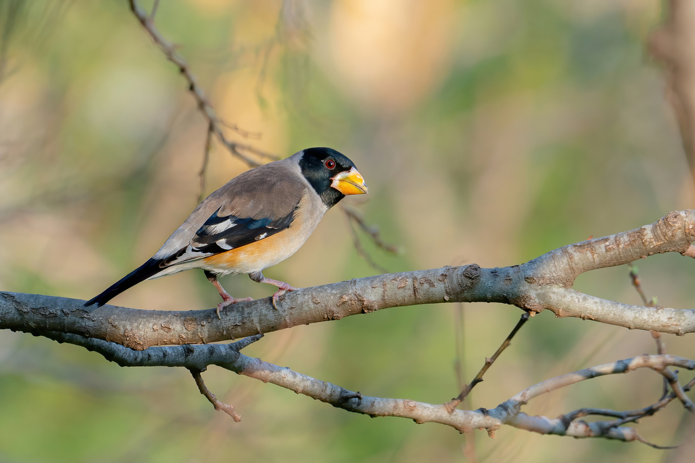
黑尾蜡嘴雀Chinese Grosbeak常见
看点夸张的黄色粗喙(像沾了蜡),雄鸟头黑、身体淡黄褐色。
行为小群活动在树冠中层,吃种子。叫声清脆有金属感。
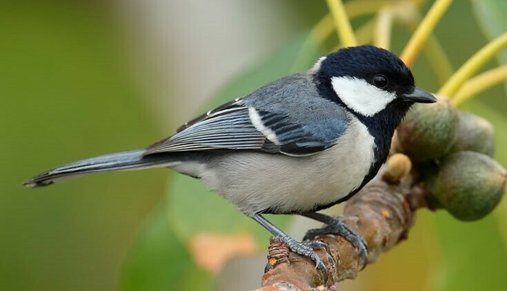
大山雀Great Tit极常见
看点白脸黑头黑领带——胸前一条黑色纵带("黑拉链"绰号由来)。
行为极其活跃,叫声"咦——叽-叽-叽"清亮。
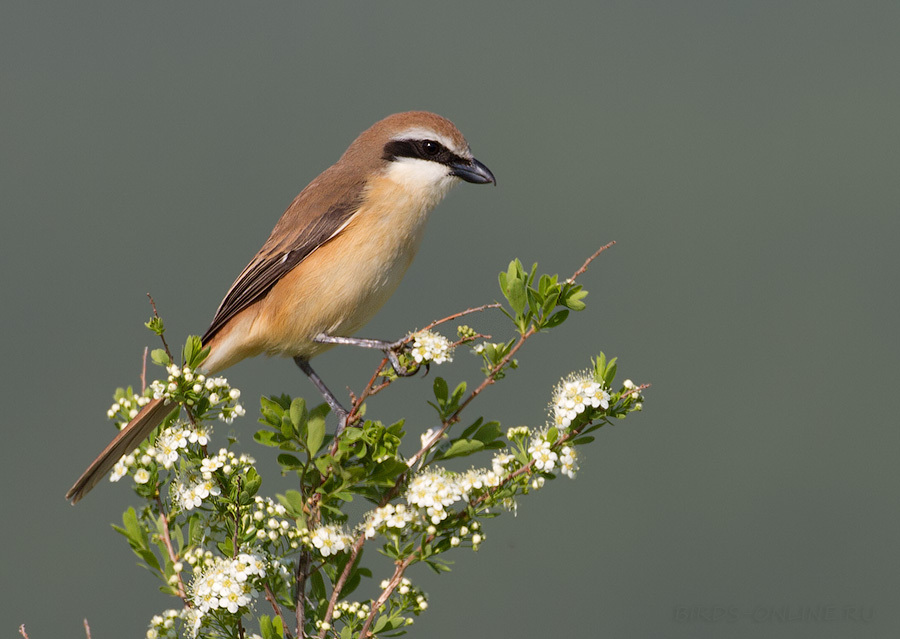
红尾伯劳Brown Shrike常见
看点过眼黑带明显(像戴了黑眼罩),尾羽棕红色,背棕褐。
行为喜站在灌木顶端或电线上俯视猎物,可将猎物穿刺在荆棘上储存。
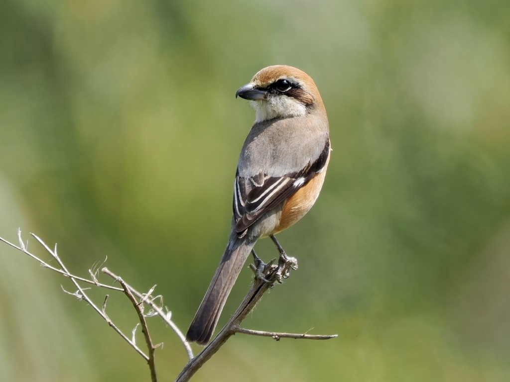
牛头伯劳Bull-headed Shrike偶见
看点头顶栗红色、灰色背,白色眉纹+黑色过眼纹。雌鸟体侧有鳞状纹。
区别红尾伯劳牛头伯劳头顶栗红色、背灰;红尾伯劳头顶灰色、背棕褐、尾更红。
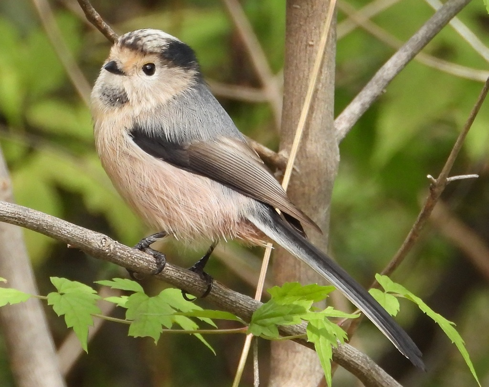
银喉长尾山雀Silver-throated Bushtit常见
看点白色头顶带黑色侧冠纹,喉部银白色,尾巴极长。体型如乒乓球大小。
行为群体行动,不停在枝头跳跃。叫声细细"嗞嗞"。
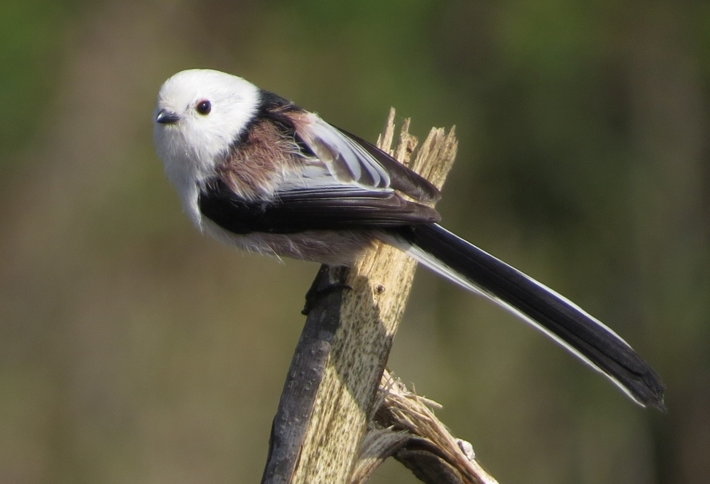
北长尾山雀Long-tailed Tit偶见
看点头部纯白无纵纹(区别银喉长尾山雀的关键),体粉白,长尾。
行为与银喉长尾山雀习性相似,冬春混群常见。
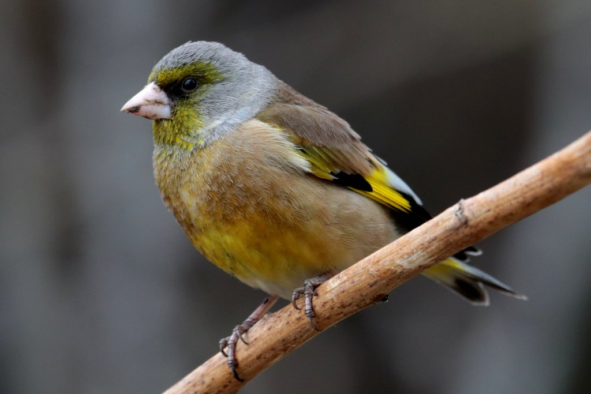
金翅雀Grey-capped Greenfinch常见
看点飞起时翅膀闪现大块金黄色斑,停时看到黄绿色翅斑和黄色尾基。
行为小群活动于种子多的灌木丛和草地边缘。叫声"叽唧"带颤。
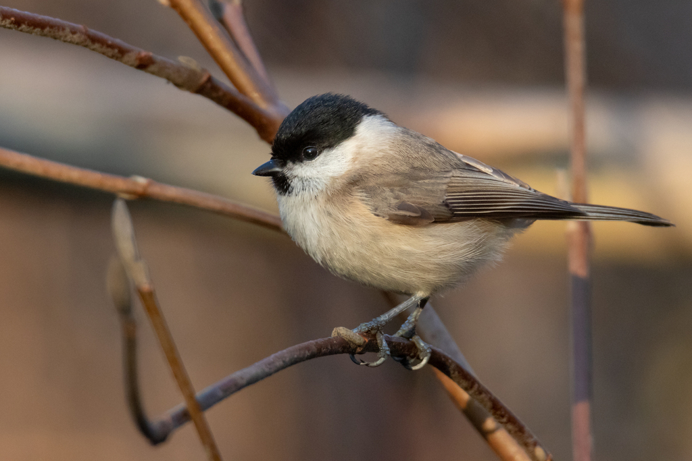
沼泽山雀Marsh Tit常见
看点黑色光亮头盖,白色脸颊,无翅斑(区别大山雀)。
行为叫声清脆"丘比-丘比"。单独或成对活动于林缘灌丛。
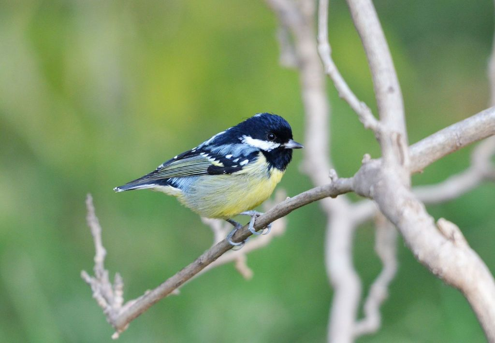
黄腹山雀Yellow-bellied Tit偶见
看点中国特有种。腹部鲜黄色,雄鸟背蓝黑色、有两道白色翅斑,体型娇小。
行为活跃于松柏混交林树冠。五月在奥森属于运气鸟。
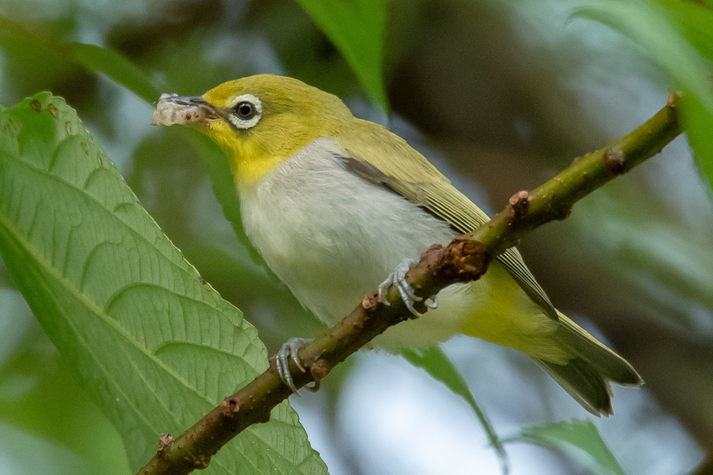
暗绿绣眼鸟Swinhoe's White-eye常见
看点小巧翠绿,眼周一圈明显的白色眼圈(绣眼之名由此来)。
行为群体在花树上觅蜜和小虫。叫声连续"唧唧唧"细密。
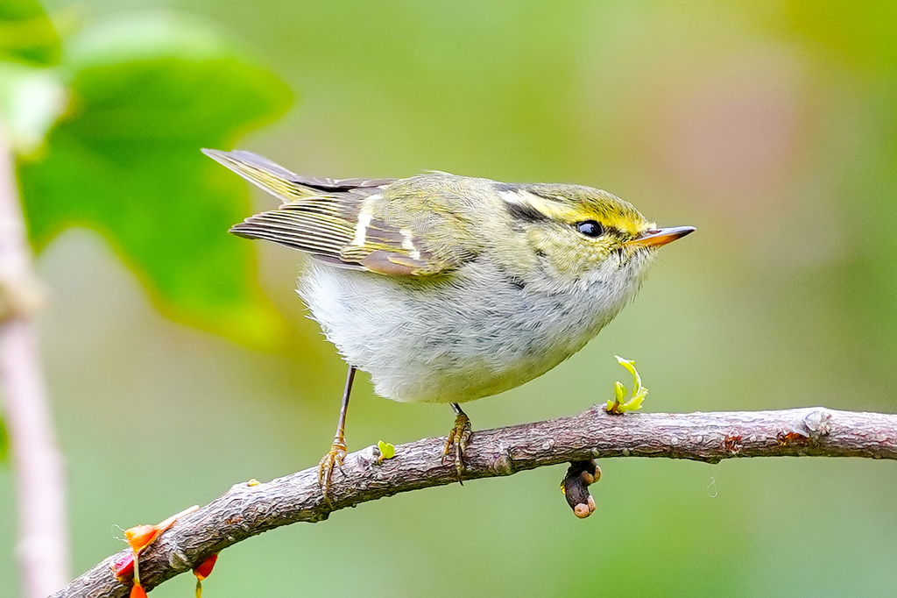
黄腰柳莺Pallas's Leaf Warbler过境
看点腰部亮黄色是核心特征,头顶有黄色中央冠纹,双翅斑清晰。
行为在树冠上层快速跳跃,叫声"唧唧"高频细弱。五月底可能仍有过境个体。
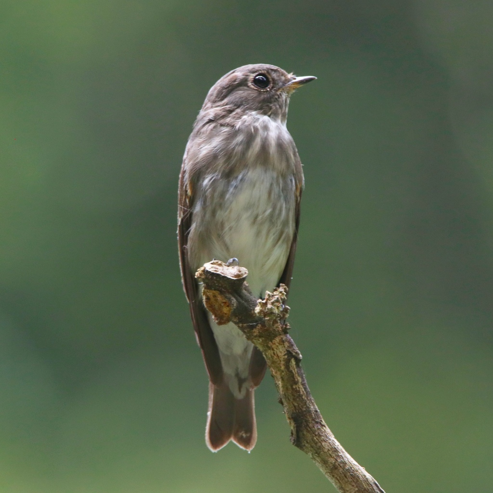
乌鹟Dark-sided Flycatcher过境
看点上体深褐色,胸侧和两胁深色纵纹浓重。眼圈不明显。
行为停在突出低枝上,发现飞虫即出击,再飞回原枝。
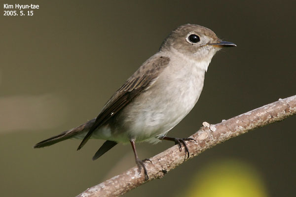
北灰鹟Asian Brown Flycatcher过境
看点浅灰褐色,腹部白,眼圈淡白色较明显。比乌鹟颜色更浅淡。
区别乌鹟北灰鹟整体苍白,胸侧纵纹模糊;乌鹟体色深,纵纹粗重。
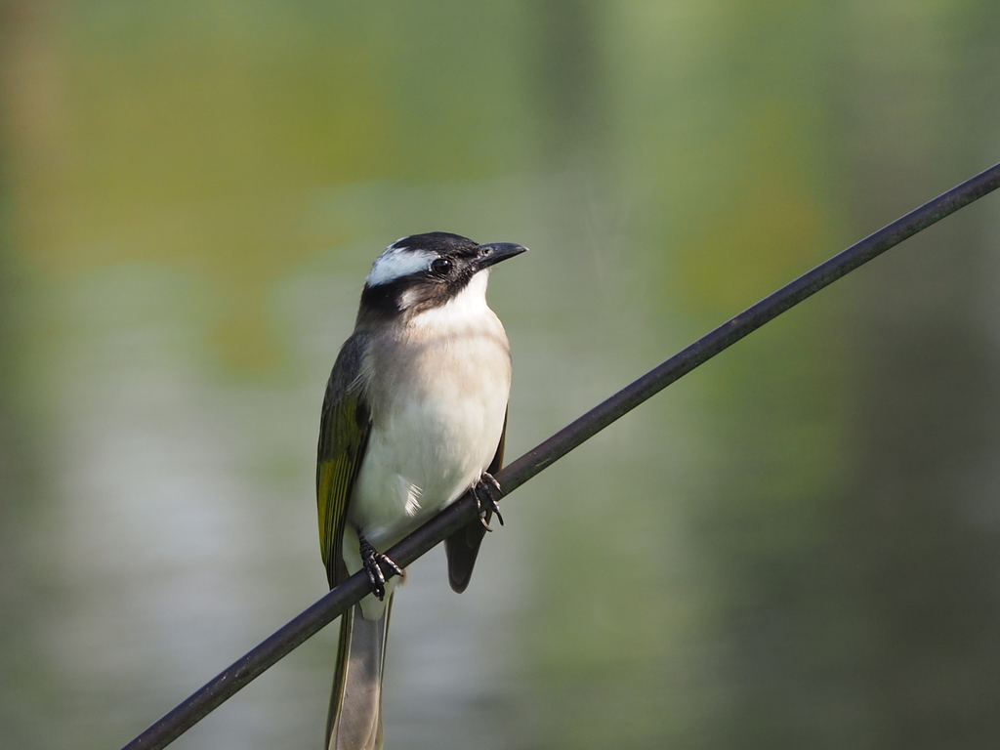
白头鹎Light-vented Bulbul极常见
看点白色枕部(脑后白毛)和白色颊斑,黑色头顶,黄色尾下覆羽。
行为叫声多变悦耳。北京近年扩散中,奥森已稳定定居。
开阔草坪上空、湖面上空、步道旁开阔地。看燕子、鹀类、鹨类和猛禽。
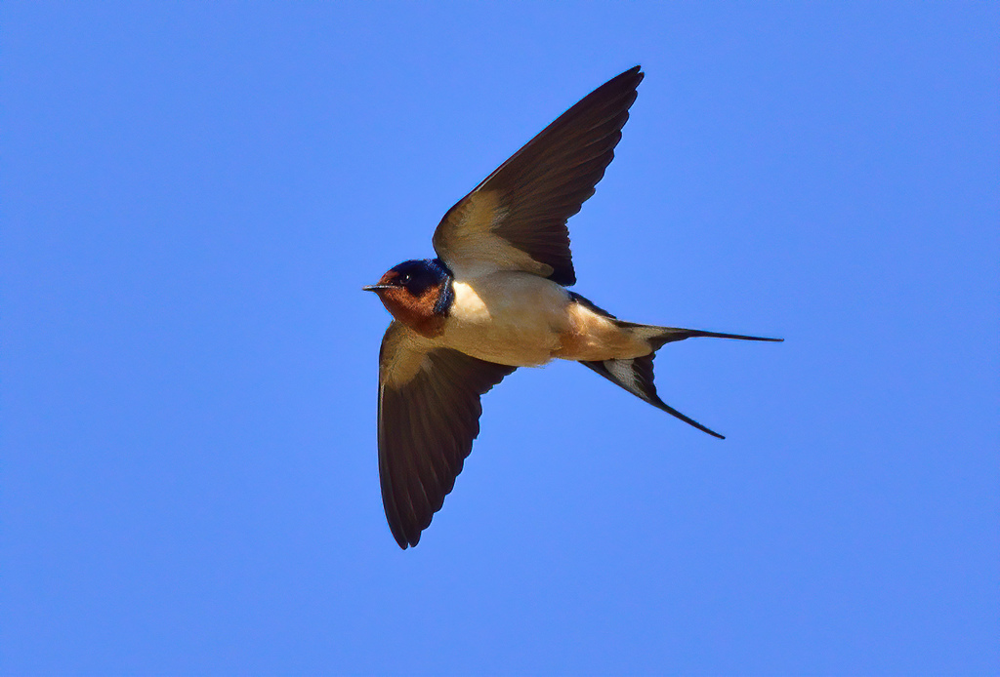
家燕Barn Swallow极常见
看点蓝黑色背、砖红色喉部、白腹,深叉的剪刀尾。
何处找湖面、草地上空低飞兜虫。常和金腰燕一起出现。
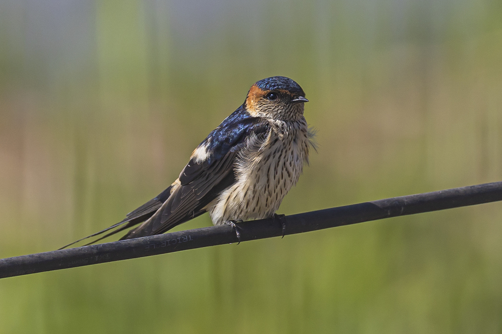
金腰燕Red-rumped Swallow常见
看点腰部一道明显的橙红色带,腹部细密纵纹。
小技巧飞行时看燕子的腰:橙色带=金腰燕;干净蓝黑=家燕。

珠颈斑鸠Spotted Dove极常见
看点像鸽子但更瘦长,颈侧一块黑底白点的"珍珠斑"是识别核心。
行为叫声"咕咕——咕"。地面草地、步道上踱步觅食。
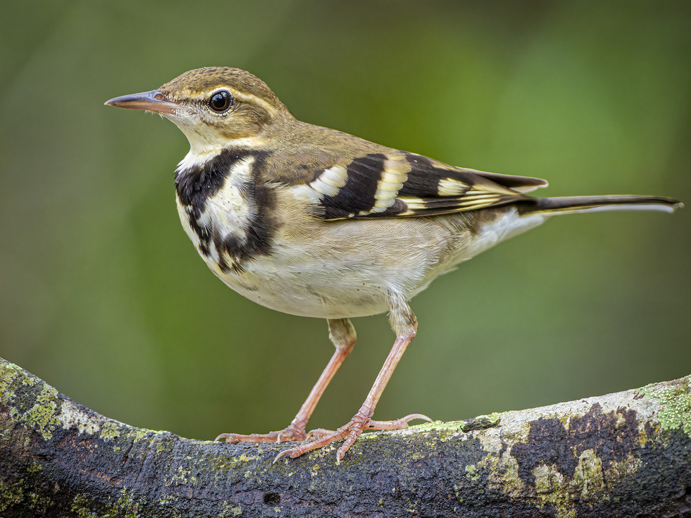
山鹡鸰Forest Wagtail过境
看点黄绿背、双道黑色翅斑。尾巴左右横摇而非上下摆(鹡鸰中独此一家)。
行为在林间步道或草地上觅食,五月仍有过境个体路经奥森。
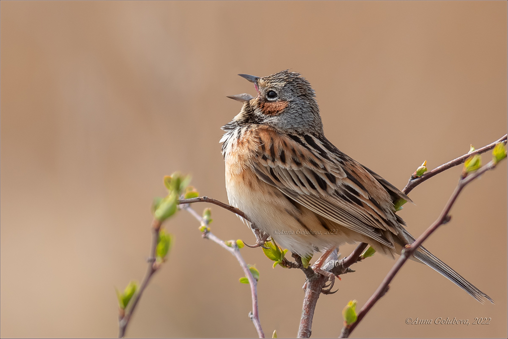
栗耳鹀Chestnut-eared Bunting过境
看点雄鸟耳羽栗红色、头顶灰、胸部有黑色胸带。雌鸟较暗淡。
行为落地后在草丛或矮灌木间觅食草籽。五月底过境尾声。
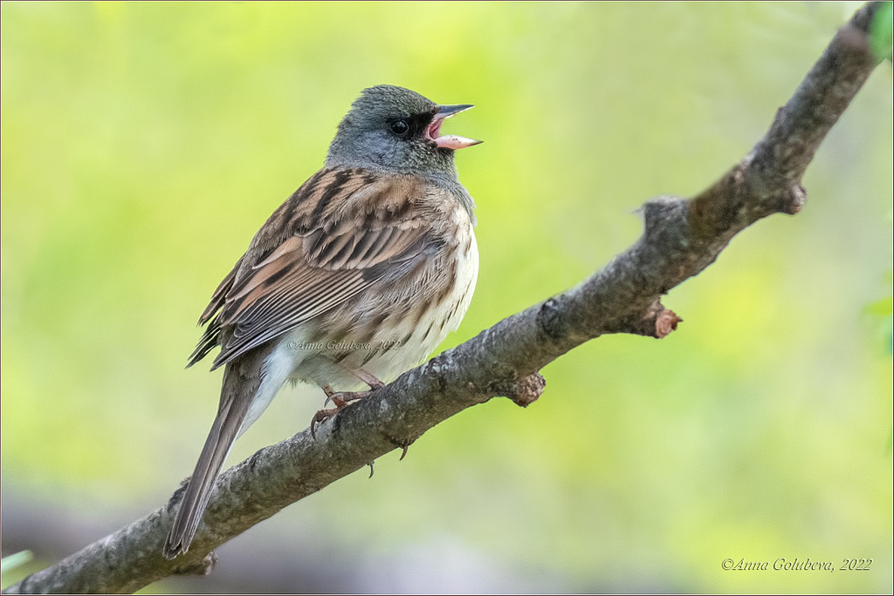
灰头鹀Black-faced Bunting过境
看点雄鸟头颈橄榄灰色,腹部黄色。雌鸟头部有黄色眉纹。
行为常混在其他鹀群中,在地面或低矮植被上觅食。
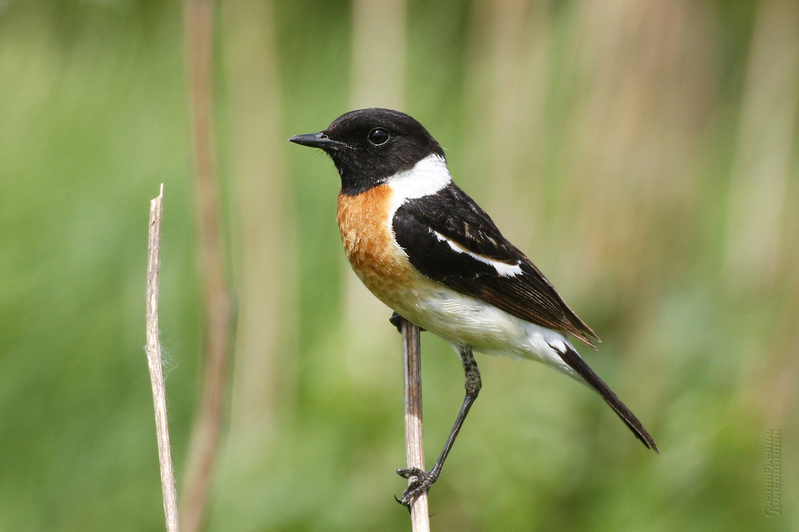
黑喉石鵖Siberian Stonechat过境
看点雄鸟头黑、肩部白斑、胸橙红,停在突出枝上如浓缩版小猛禽。
行为开阔地灌木顶端停栖,尾巴频繁上下抖动。
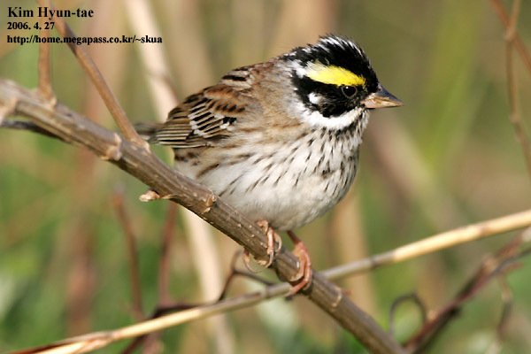
黄眉鹀Yellow-browed Bunting过境
看点眉纹鲜黄色醒目,头顶黑褐色,双翅斑白色。
行为常在林缘草地或步道旁低矮处活动。五月底仍有个体过境。
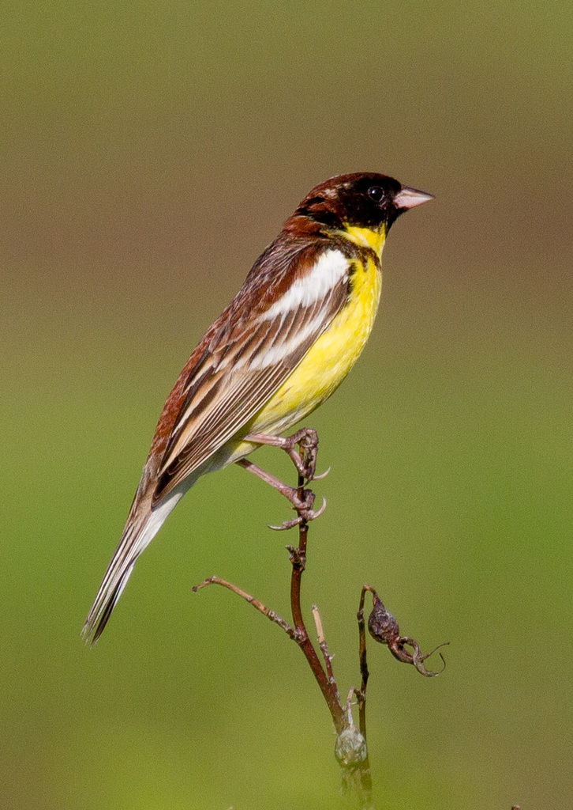
黄胸鹀Yellow-breasted Bunting★ 极危
看点全球极危(CR)。雄鸟胸部鲜黄色、胸前一道栗色胸带,头黑。曾是东亚最常见过境鸟之一。
行为草地灌丛边缘觅食草籽。五月底能见到即是幸运。
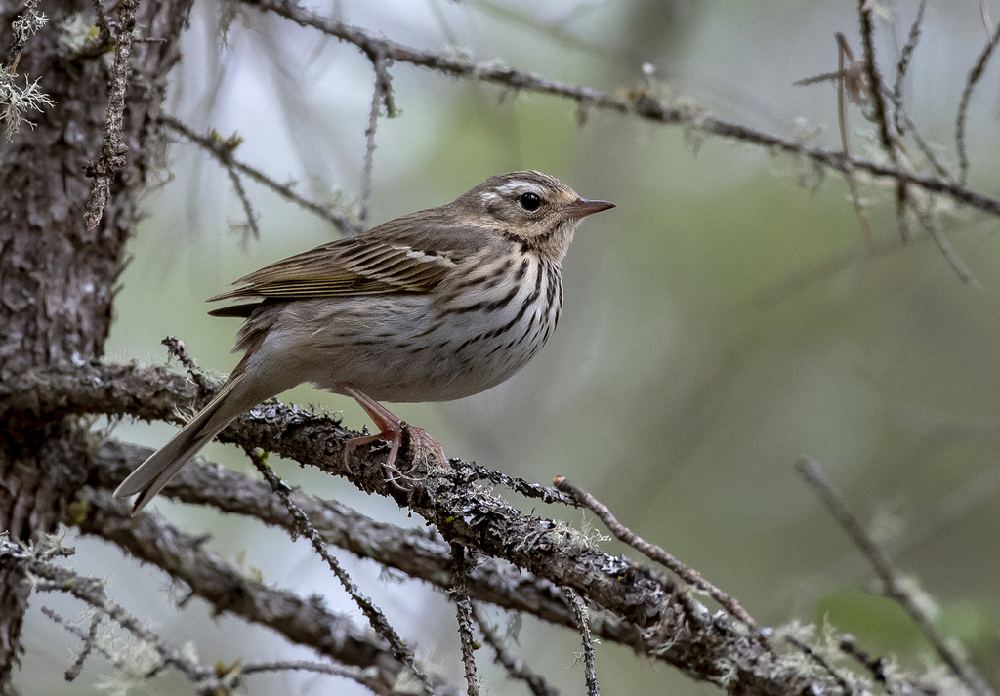
树鹨Olive-backed Pipit常见
看点背部橄榄绿色(与其他鹨区别),腹部白色带黑色纵纹,眉纹淡黄绿色。
行为在草地上行走觅食,尾巴上下点动。叫声"嗞——"细弱。
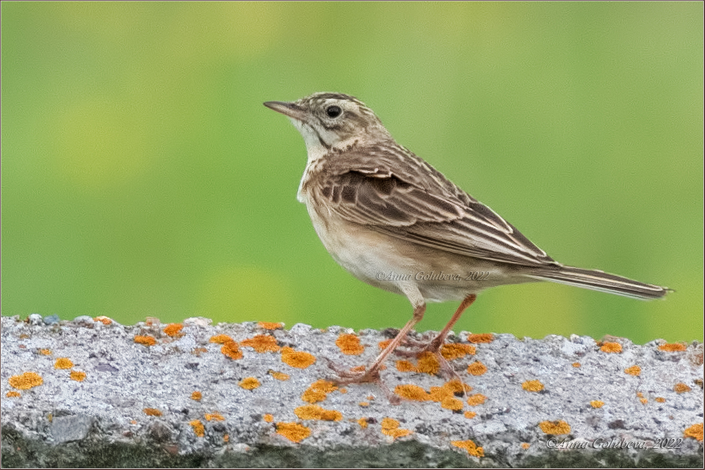
理氏鹨Richard's Pipit常见
看点鹨类中体型最大之一。后爪极长,腿长,站姿笔直。皮黄色眉纹,纵纹粗。
行为在开阔草地大步行走。受惊飞起时叫声响亮"叽——叽"。
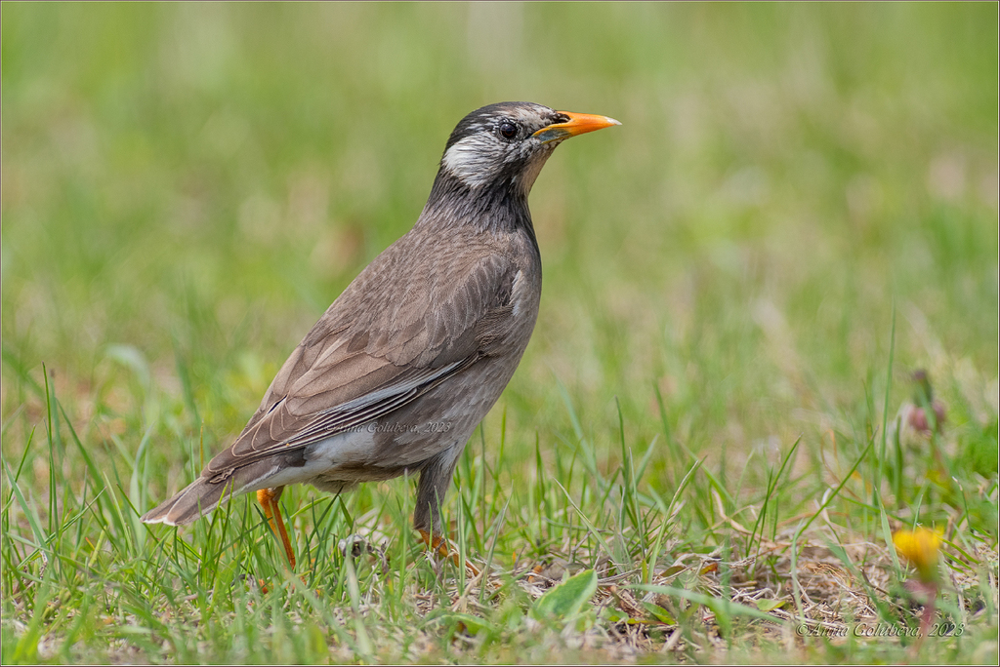
灰椋鸟White-cheeked Starling常见
看点白色脸颊和额部与深灰色体羽对比鲜明,橙红色喙,飞行时腰部白色。
行为常成大群在草地上行走觅食,也停于树冠。叫声嘈杂多变。
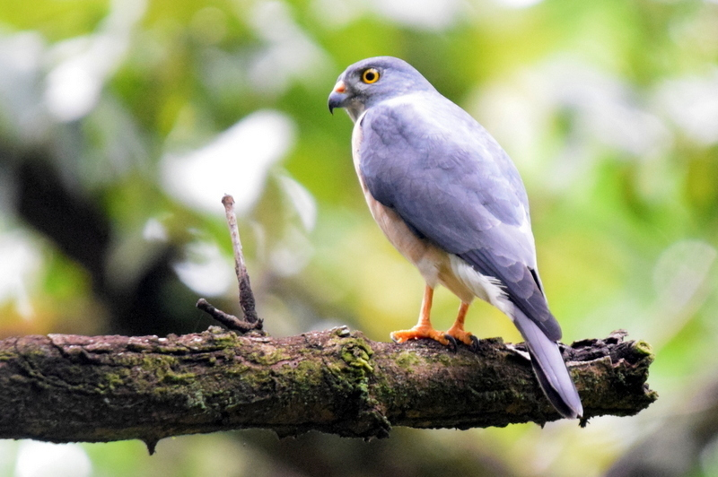
赤腹鹰Chinese Sparrowhawk过境
看点小型猛禽。成鸟胸腹橙红色,翅下白色,背蓝灰色,翅尖黑色。
行为五月过境,常在林缘上空盘旋或快速穿林。注意看湖面上空。